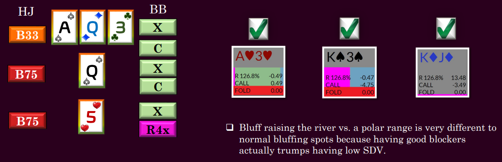

Blocking is all about removing the hands in your opponent's range that make a candidate play by you more likely to achieve its optimal result.
Blockers in most spots have only very marginal effect on the ranges.
There are 128 bricks in this wall. 96 are green and 32 are red.
How strong an effect would removing a green brick or two have on the overall distribution of green and red bricks?
Villain has a strong hand 75% of the time
Imagine that the green bricks are strong hands in Villain's range and the red ones are weak hands.
And you have a couple of blockers to Villain's strong hands.
Now Villain has a strong hand 74.6% of the time.
Never make a decision based solely or primarily on blockers.
What is the optimal result of double barrelling (c-betting) the turn? Villain folds.
Therefore we strive to block hands that would continue to our bet in some way even if these hands aren't the greatest in terms of equity.
As we have seen, blocking flush draws before they miss is usually a good thing.
But after these hands have bricked on the river they are no longer good hands with which to bluff.
On a board like the following one, Villain will be calling the turn with a lot of flush draws.
Therefore hands containing relevant spades will be giving up on this river in GTO.
Note that this is a neutral world in which it is not mandatory to bluff all of our air and therefore bluffing our worst blocker air will constitute and EV loss.
Of course when we unblock the missed draws we commit no such error by bluffing.
But Beware: whenever your range has become far stronger than your opponent's (usually this occurs in spots where he has polarised and then checked where we have condensed) you may need to bluff hands with very little SDV regardless of how negative your blockers are.
Remember that no blocker effect is commonly great enough to compensate for huge range inequality and the extra fold equity that comes from that when our range is much stronger than Villain's.
When we examine the river probe version of this run-out we see that BB boasts a large range advantage now which he/she must capitalise on.
Even hands with the worst blockers imaginable are a mistake to check here.
When bluff-raising a flop c-bet, the goal is to reduce the amount of the time your opponent continues.
On a rainbow board you can do this by blocking the backdoor flush draws and unblocking the dead suit.
On a two-tone (flush draw) board you can do this with suited cards which block the backdoor flush draw; offsuit cards that block the front door flush draw. Here you prefer to unblock the two dead suits.
But when thinly value raising a flop with, for example, top pair, you actually want Villain to have a backdoor draw he can call your raise with so in these cases we prefer to block the dead suits.
But when the flush gets there, things shift dramatically. Suddenly any hand that contains a relevant flush making card becomes a far better bluff and even a better thin value bet.
When you elect to raise a river bet, it is not sufficient to get Villain's bluffs to fold. If this were our only goal we could merely call since call of our SDV beats all of his/her bluffs any way.
Therefore when you raise the river vs a very polarised range you are always incentivised to use blockers to Villain's value range and this very often means raising pairs but always means thinking about what Villain;s value range is and how to block it.
